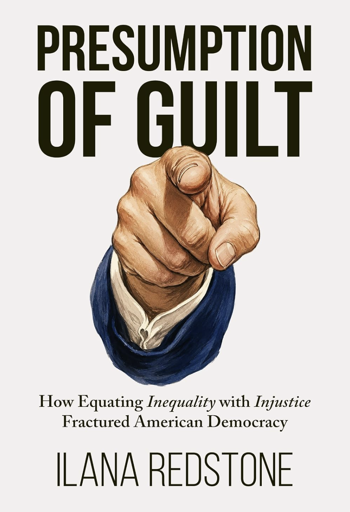

Start with the issue list
Click an issue button
Its reasoning route will appear automatically. Choose another issue whenever you want to replace it.

This interactive map lets you trace how a variety of politically progressive claims are linked to a single premise. When the premise is treated as settled, disagreement can register only as ignorance, denial, prejudice, or moral failure. The map also shows why familiar remedies do not solve that moral condemnation of disagreement.
The map reconstructs the reasoning that follows once the premise is treated as settled.
When an underlying causal premise remains implicit, disagreement with what follows from it can appear to reject the moral value attached to the claim. Making the premise visible creates room to disagree about causation and its implications without rejecting that value.
The map does not deny that racism, bigotry, or injustice are real. It examines what happens when inequality itself is treated as sufficient evidence of their cause.
Its reasoning route will appear automatically. Choose another issue whenever you want to replace it.